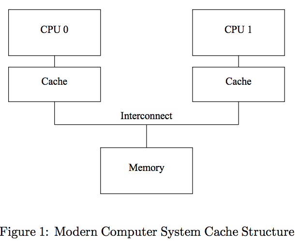
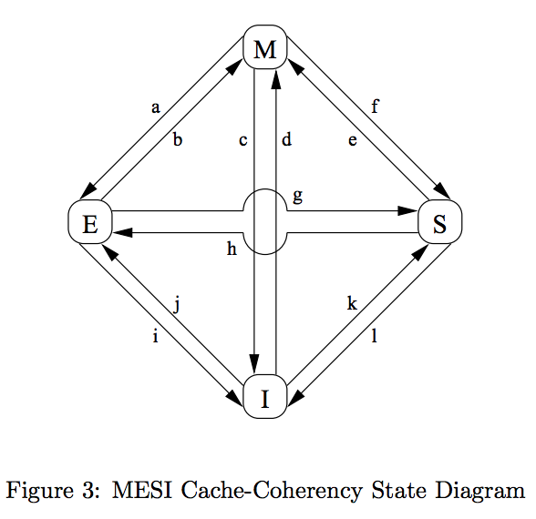
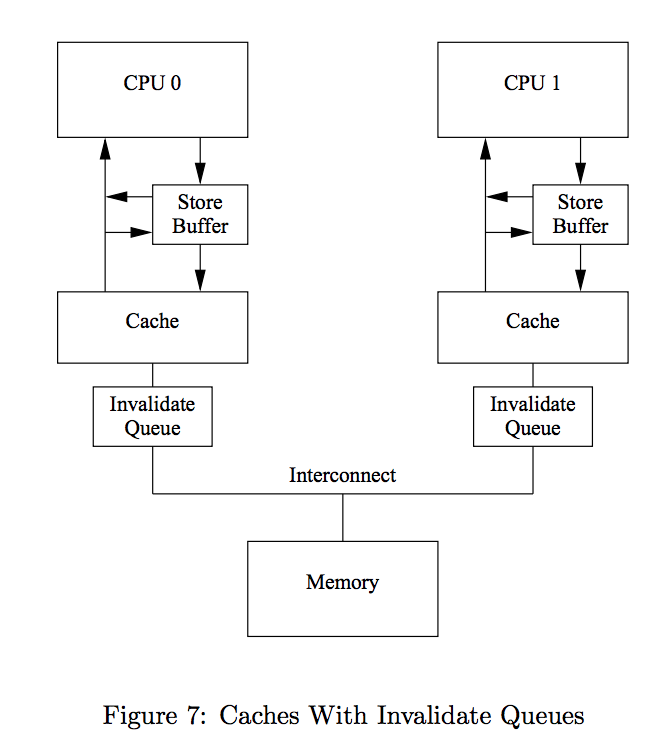

Cpu Cache是为了加速Cpu访问主存储 （memory）的速度,下面是一个Intel core i7处理器官方手册给出的Cpu指标：
Data Source Latency local L1 CACHE hit ~4 cycles (2.1 - 1.2 ns) local L2 CACHE hit ~10 cycles (5.3 - 3.0 ns) L3 CACHE hit, line unshared ~40 cycles (21.4 - 12.0 ns) L3 CACHE hit, shared line in another core ~65 cycles (34.8 - 19.5 ns) L3 CACHE hit, modified in another core ~75 cycles (40.2 - 22.5 ns) remote L3 CACHE ~100-300 cycles (160.7 - 30.0 ns) Local Dram ~60 ns Remote Dram ~100 ns
在smp（对称多处理）架构中，多个cpu core共享一个内存:  而cache是位于cpu中的，故存在同一份内存被cache在多个cpu的cache Line中，故而需要保证cache的透明性，所以有了cache一致性协议。
cache一致性协议比较广泛使用的是MESI的协议，每个cacheLine有如下的状态：
cache的状态转换如下图

仅仅依靠cache一致性协议，还太简单，因为在cache失效的时候，必须等待别的cpu完成失效，然后应答发起失效的cpu，这是一种同步通信，会导致性能非常低下， 而为了提升性能，在某些情况下，做了一些优化：

在经过改进后，本地的任何读取，都要先检查store buffer中是否有，如果有从store buffer读取，否则再走原来的读取逻辑，这叫做 store buffer 的 read forword。
在改进后的cache一致性架构中，提升性能的同时，引入了不安全性。 如，由于cache失效后并未写入cacheLine和同步等待别的cpu失效其cache，如果处于invalid queue中，那么别的cpu读取就是陈旧的值。 而如果在本地两次更新中，如果第二次的更新cache状态是exclusive和第一次是非exclusive和modified等，那么第二次更新可能先于第一次而被别的cpu看到。这违反了顺序性。
根本原因在于，cache的更新失效并未同步完成，而异步的进行，导致了生效时刻的乱序。
在需要多线程并发执行的情形下，如果需要保证因果性，线性化，则引入memory barrier来使得这种优化退化到简单的MESI情况。